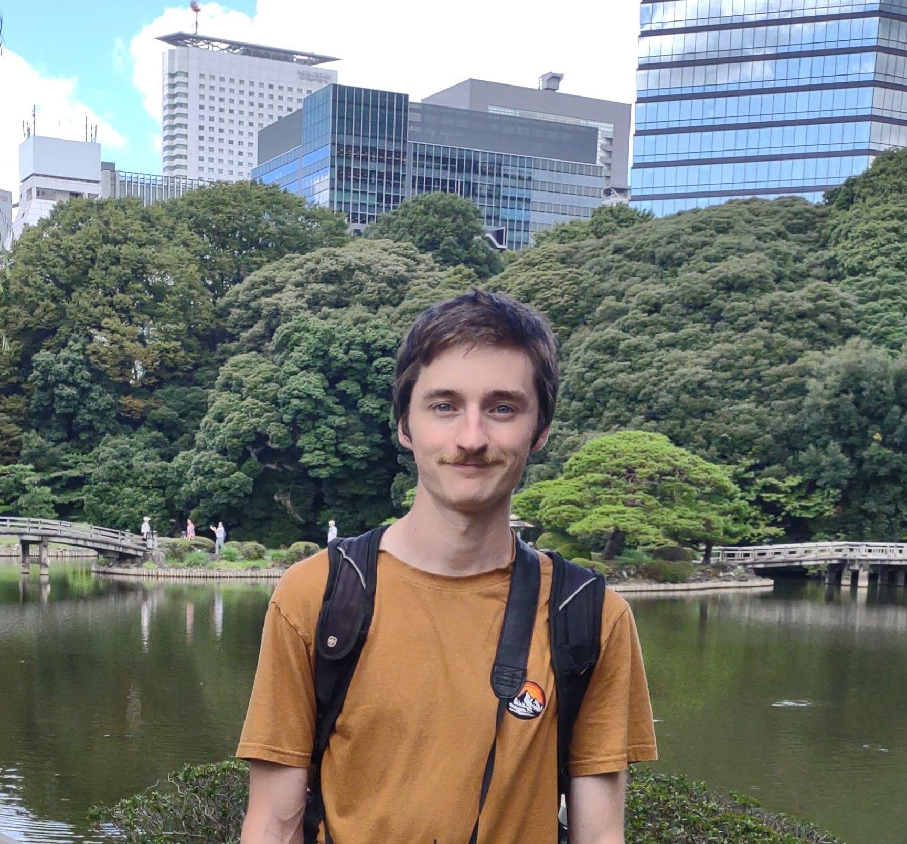

I am a 6th year Ph. D. student at the University of Oregon studying under the direction of Dr. Ellen Eischen.
I am currently seeking data science positions in the greater Seattle area.
You can find several data driven projects I've worked on over the last year under the data science tab.
My dissertation generalizes the theory of Hermitian Jacobi forms to degree greater than 2 and gives some non-vanishing results for the Fourier coefficients
of Hermitian modular forms as a consequence. Outside of math I am interested in the natural world. I am very active on iNaturalist
both with the uploading of my own observations and with the identification of others. You can see some of the best photos I've taken under the Nature tab.